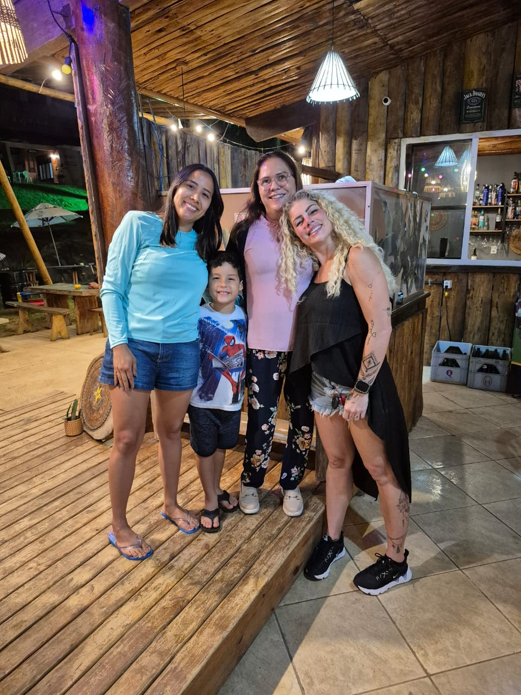
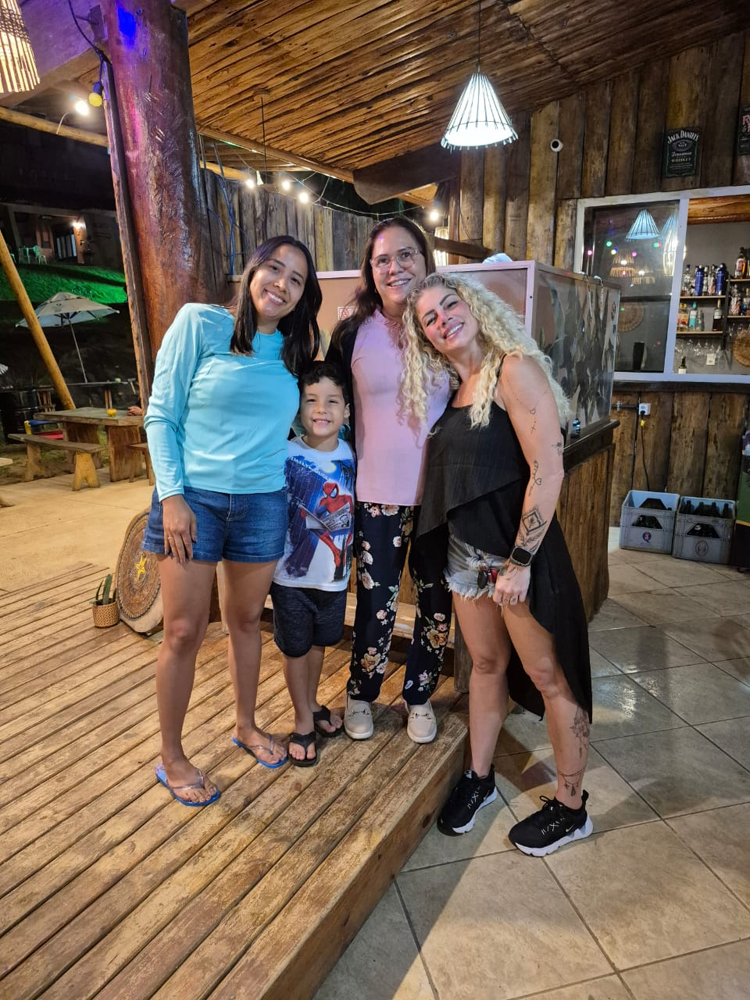
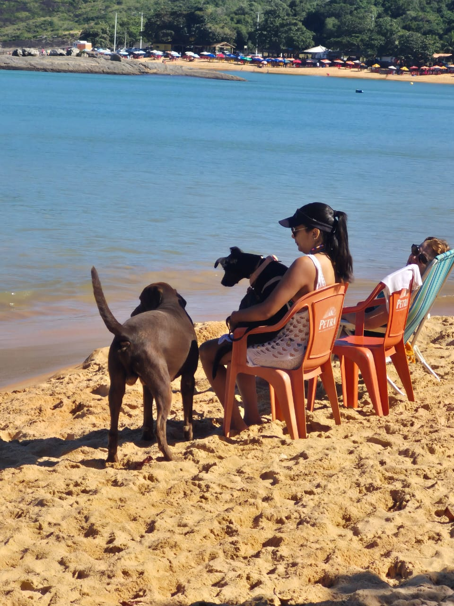
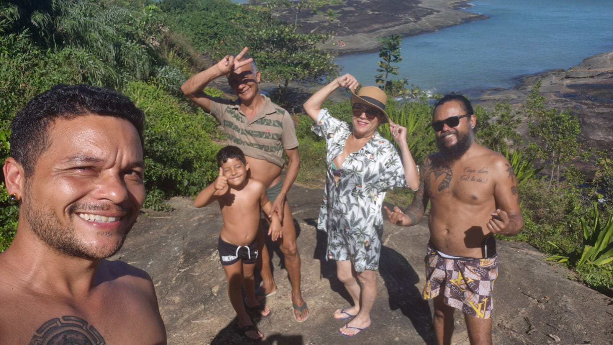
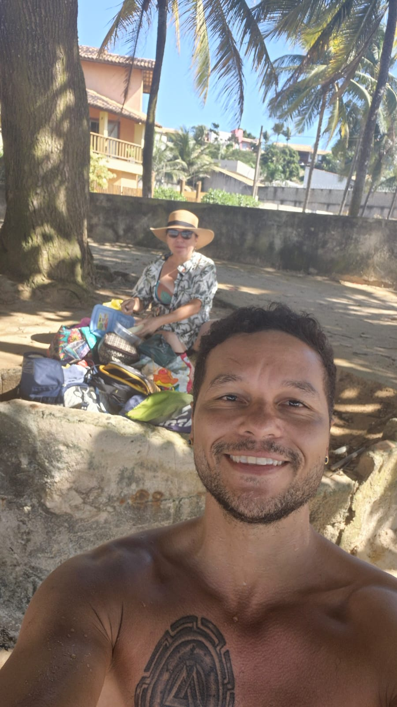

Chegada à Setiba - Guarapari
Assim que chegamos... O Lucca tava doido pra pisar na areia... Haha... Lá, conhecemos a paquita, Kátia Paganote!

Assim que chegamos... O Lucca tava doido pra pisar na areia... Haha... Lá, conhecemos a paquita, Kátia Paganote!

Dick tiesta levou (cape)Tina para a praia.. Assim como o (lady)Tadinho... Lá, fizemos um gordo amigo canino salva-vidas. Amedrontador... Para alguns...!

Tiesta, Guilherme e teus cães já se haviam retirado, pois precisavam voltar ao trabalho (todos, inclusive os cães).

O Sr. Jiemes tirou foto com Mamis Poderosa... Que apenas ficou na areia da praia a nos assistir com o mar Brabão (nas palavras de Mamis)...
